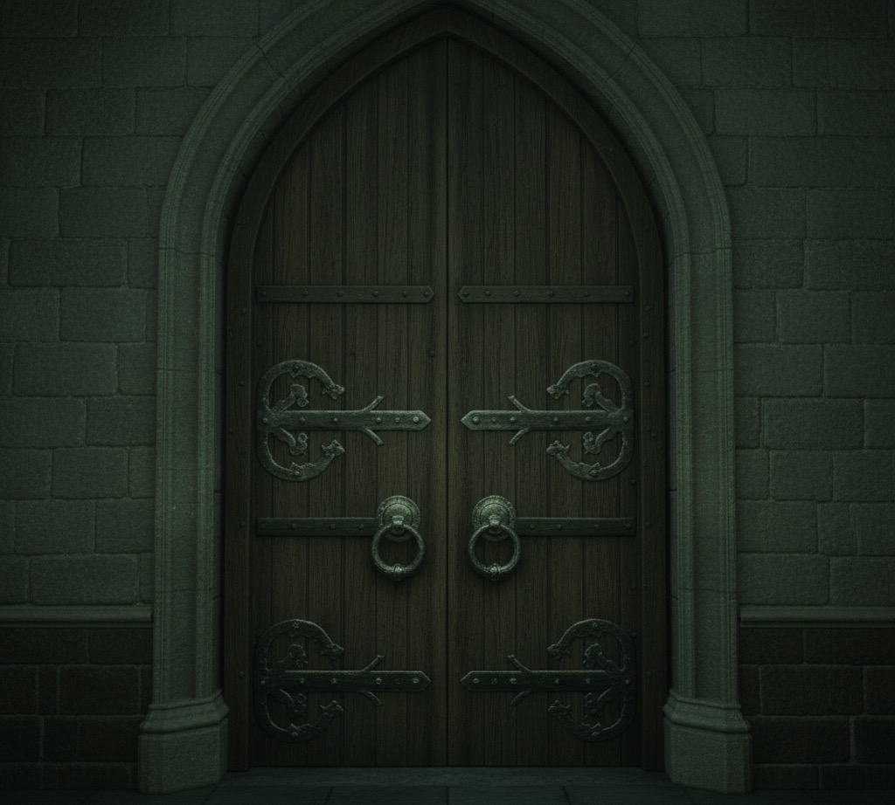

К шуму и звуку голосов
Неужели тыква задумала укрыться в одной из комнат? Какой кошмар! Здесь повсюду тыквенные семечки...
Вы делаете шаг и слышите хруст. Кажется, вы наступили на крысиные кости. Вы поднимаете взгляд и замечаете, что на вас уставились десятки пар сонных совиных глаз.

Дверь открывается. Вы оказываетесь в общем зале факультета Слизерин, но тыквы нигде не видно... Вы осторожно осматриваетесь. Бум! Что-то ударило вас по голове и вы падаете.
Поздравляем, вы были атакованы тыквой в Общем Зале и лежите без сознания!
Вы заходите в тускло освещённый зал. На экране показывают незнакомый вам фильм, но это сейчас неважно. Осмотревшись, на одном из кресел вы замечаете странную подушку.
Вы заходите в уютную комнату. Здесь очень тепло и уютно, и вы бы с радостью вздремнули, но снова слышите шепот.
Что-то задело вашу ногу! Вы отпрыгиваете, и осмотревшись, видите как тыква укатывается дальше по коридору
Вы решаете броситься в погоню немотря не на что. Пол здесь мокрый и скользкий, и вы, конечно, подсказльзываетесь.
Открыв глаза, вы понимаете, что вам тяжело вздохнуть. На вашей груди сидит тыква.
Тыква устроилась между стопками книг на столе. Кажется, она что-то читает. Или делает вид.
Поздравляем! Вы нашли тыкву в Читательском зале.
На двери красуется табличка "Староста Каталина Вульф", вы стучитесь. Она точно будет не в восторге, ведь её кабинет весь в тывквенных корочках и семечках!

Мерлин подери, никто ведь не поверит! Вы смотрите на тыкву, которая блаженно отдыхает на каменном берегу.
Вы попадаете в Слизеринскую Оранжерею. Идеальное место, чтобы спрятаться тыкве, не так ли?
Поздравляем! Вы нашли тыкву в Оранжерее.
Вероятно, это самое опасное место для тыквы во всем замке! Но, вероятно, тыква сделала ставки именно на это. Стоит осмотреться?
Да не, тыква сюда не пошла бы. Пойду я